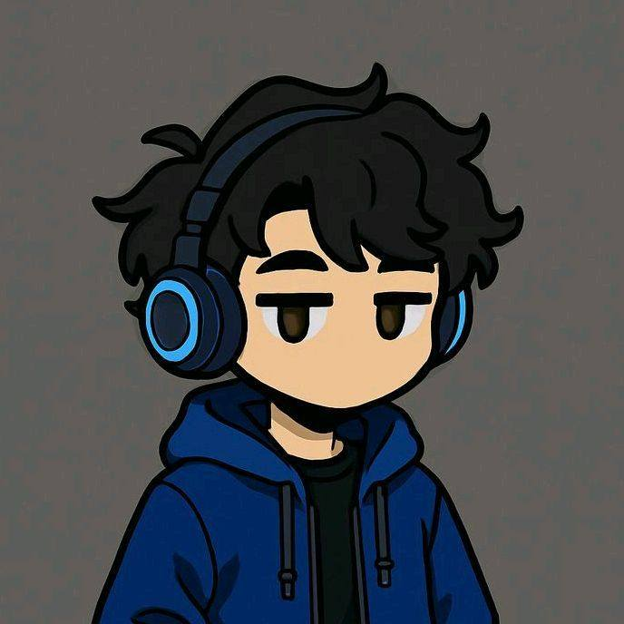
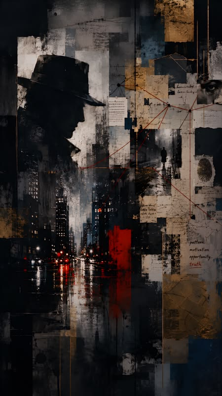
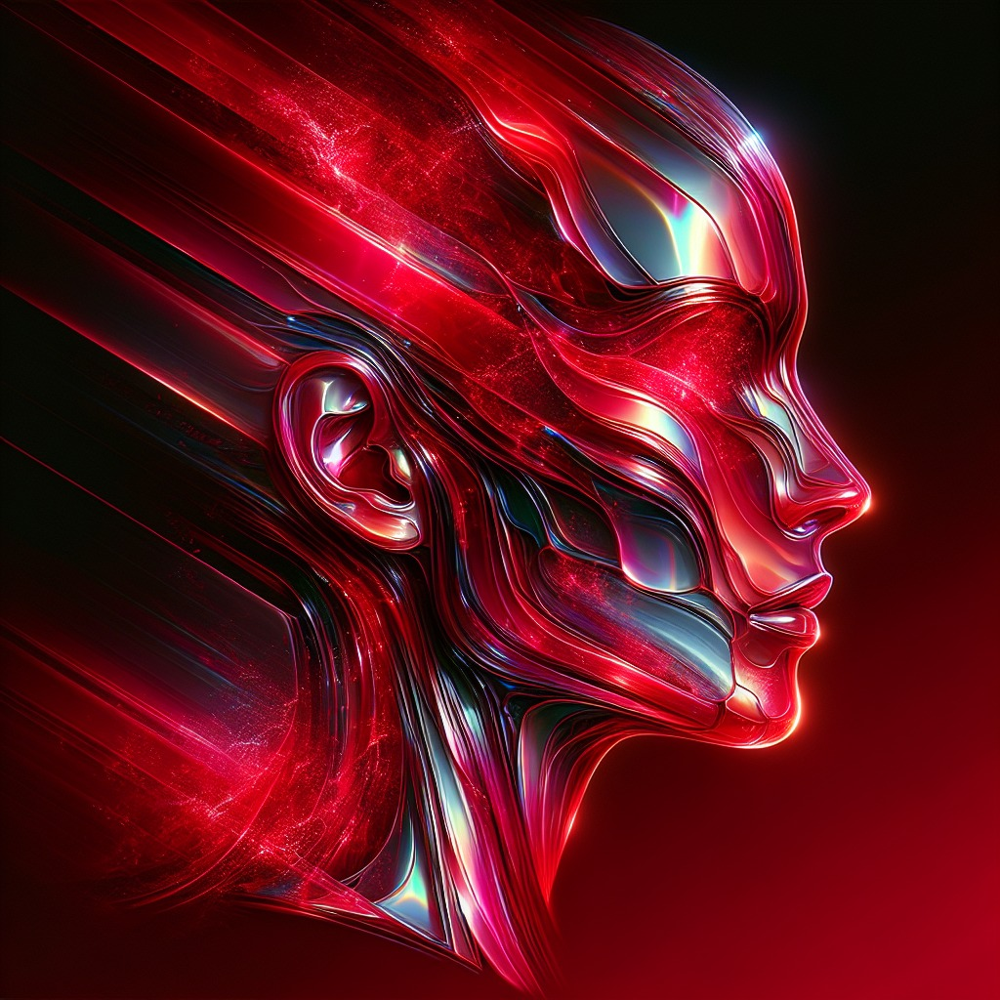

Hi, I'm a 21 year old SOC Analyst, cybersecurity researcher, CTF player, and curious mind deeply interested in open-source, cybersecurity, and digital investigations. Focused on CTI — Cyber Threat Intelligence.
Hands-on SOC experience in security monitoring, alert triage, and incident response using Microsoft Sentinel and Microsoft Defender XDR, Cortex XDR, XSIAM, XSOAR environments.
Outside of studying, I'm usually writing code, exploring security challenges, reading, listening to music and making music. I've worked at startups and most of my projects are available on GitHub.
I'm open to new roles, collaborations, and opportunities. You can see my resume, find me elsewhere, or reach out at saivigggu@proton.me.
If you're here, it means you know something about me. Thank you for taking the time to have a look at my profile.